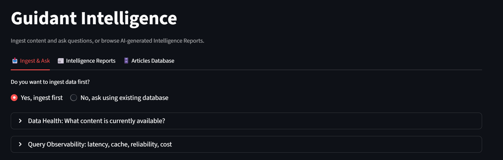
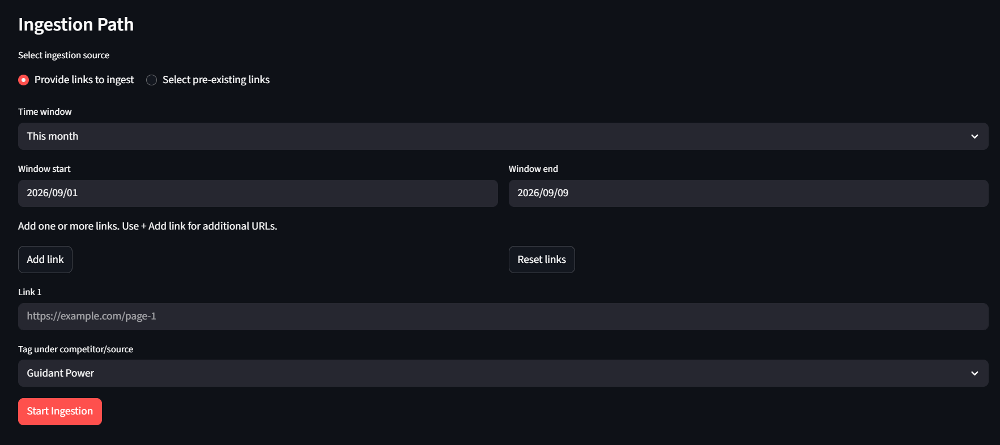
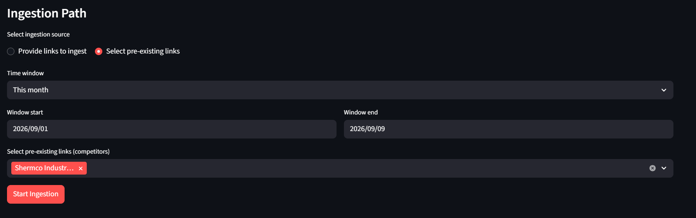
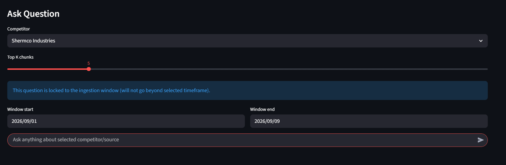
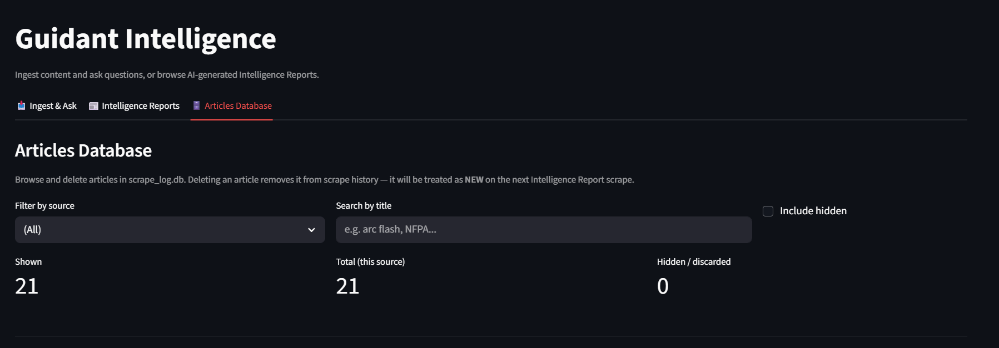
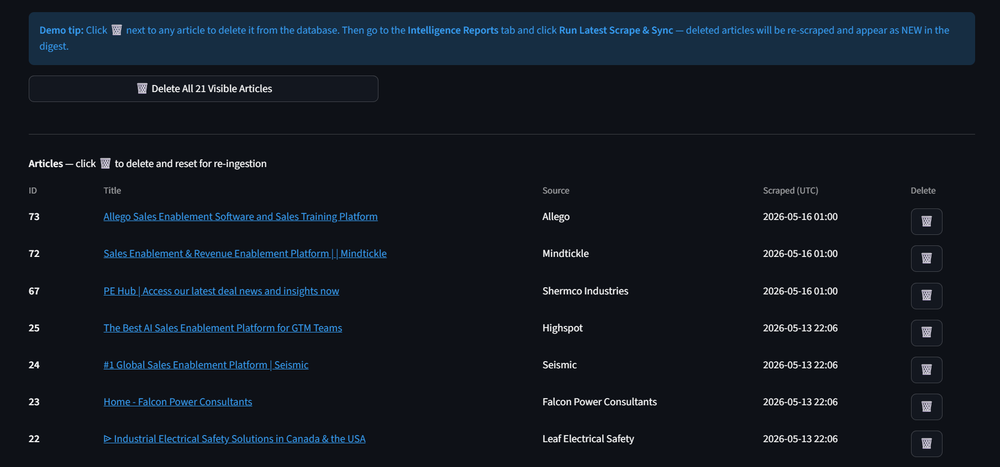
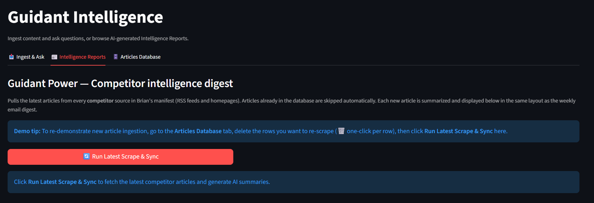

Department of Growth — Competitive Intelligence & Weekly Email Reports
LLMRAG
Overview
A Python platform for competitive and industry intelligence, built around the electrical
safety industry (NFPA 70E, arc flash, compliance training) with Guidant Power
as the reference client profile. It scrapes competitor and publication sources into SQLite,
answers questions over that content with a retrieval-augmented pipeline, and runs a scheduled
email digest that summarizes only net-new articles since the last successful send.
What It Does
Workflow
Entry Point
What It Does
Interactive CLI
main.py
Natural-language Q&A routed through specialized intelligence modules (competitor intel, topic extraction, EDGAR analysis) using the configured LLM provider.
Browser dashboard for competitor/date-window ingest, ad-hoc URL ingestion, filtered Q&A, and RAG observability metrics.
Competitor digest email
weekly_emailer/job.py
Scrapes every competitor source, persists to SQLite, and emails net-new articles since the last successful digest via SMTP.
Intelligence Orchestrator
report_orchestrator.py
Standalone RSS-to-SQLite pipeline: ingests, deduplicates, fetches full article text, summarizes with Claude, and writes a Markdown report.
Email Pipeline: v1 → v2
The digest pipeline went through a real architectural revision. v1 live-scraped
every source at send time, then summarized and sent — slow, and it kept re-scraping
homepages that hadn’t changed. v2 decouples scraping from delivery:
articles are scraped and persisted to SQLite first, then a query pulls only what’s new
since the last successful send, summarizes just that, and records the send timestamp only on
success.
That makes the send cadence idempotent — a crash mid-run can’t cause duplicate
sends or silently dropped articles, because the “what’s new” window is
derived from a persisted timestamp, not from in-memory state.
Architecture
Every entry point (CLI, RAG menu, Streamlit, the digest job, and the standalone orchestrator)
shares the same underlying data: a SQLite article store for dedup and scheduling state, a
ChromaDB vector store for semantic search, and a unified LLM client that abstracts Ollama,
Claude, and Gemini behind one interface.
High-level data flow shared by every entry point
Tech Stack
Layer
Tool
Purpose
LLM providers
Ollama · Claude API · Gemini API
Selectable at runtime via LLM_PROVIDER; one unified client interface
Vector store
ChromaDB
Stores embedded chunks for retrieval-augmented Q&A
Embeddings
sentence-transformers + torch
Local embedding generation, no external embedding API
Persistence
SQLite
Article store, content-hash dedup, and digest send-log
Email delivery
smtplib (stdlib)
HTML digest delivery over SMTP — Gmail, Microsoft 365, etc.
Scheduling
APScheduler
In-process weekly cron for the digest job
Scraping
feedparser, httpx, BeautifulSoup, Playwright
RSS parsing and HTML extraction, with a headless-browser fallback for sites that block basic fetches
Web UI
Streamlit
Ingest, ask, and observability dashboard
Ingest & Ask
The Streamlit dashboard walks through ingesting content before — or instead of —
asking a question, with a data-health check and query-observability panel (latency, cache,
reliability, cost) up front.

Ingest & Ask — landing view
Links can be ingested two ways: paste new URLs directly, or select from the pre-existing competitor manifest.

Ingestion Path — provide links

Ingestion Path — pre-existing links
Questions can be scoped to a single competitor and locked to the same ingestion window, so answers never reach beyond the data that was actually pulled in.

Ask Question — scoped retrieval
Articles Database
Every scraped article lives in scrape_log.db and can be browsed, filtered, and
deleted from the UI — deleting an article resets its dedup state so it’s treated
as new on the next scrape, which doubles as a demo tool for showing the ingestion pipeline
pick up “new” content on demand.

Articles Database — filters & counts

Articles Database — browse & delete
Intelligence Reports
Pulls the latest articles from every competitor source in the manifest, skips anything already
in the database, and summarizes each new article in the same layout used by the weekly email
digest — so the in-app report and the email a stakeholder receives are generated by the
same code path.

Intelligence Reports — on-demand digest
Engineering Highlights
Idempotent digest sends: a dedicated guidant_digest_runs table records only successful sends, so the “net-new since last time” window survives crashes and restarts without re-sending or dropping articles.
Content-hash dedup: articles are deduplicated by a hash of their content, not just URL, so a re-scraped but unchanged page is skipped automatically.
One LLM client, three providers: Ollama, Claude, and Gemini sit behind a single client interface with separate narrative/JSON model slots, so swapping providers is a config change, not a code change.
Shared state, independent pipelines: the standalone Markdown-report orchestrator and the email digest both read and write the same SQLite store, so a manual orchestrator run can feed the next scheduled digest without any extra wiring.
Scoped, windowed retrieval: RAG questions can be locked to a specific competitor and ingestion time window, preventing answers from silently drawing on unrelated or stale content.